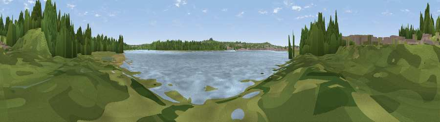

Widnes Warth
#44416 in England · top 91% of its area beats it · near WidnesThe view, rendered

A 360° render of this exact spot computed from the terrain model, tree cover and land cover — summer colours, afternoon light, calibrated against photographs of famous viewpoints. Real trees, hedges and buildings will differ in detail.
The panorama
Grey silhouette: terrain skyline in each direction (720 bearings, Earth curvature and refraction included). Dashed green: skyline with trees (+15 m) and buildings (+8 m) as obstacles. Blue strip: how far the ground is visible on each bearing.
Where the view opens
Wedge length = distance to the farthest visible ground on that bearing (vegetation-aware). Rings at 10, 25 and 50 km.
What fills the view
39% woodland · 36% water · 16% grassland · 6% built-up · 4% cropland
Angular shares of the visible panorama (visual magnitude), not map area. Landscape diversity 0.58 (0–1 Shannon).
Key numbers
More beautiful places nearby
The staircase of upgrades: each row has a higher view potential than everything closer. Driving times are estimates from straight-line distance, calibrated against real road routing — check an actual route before setting out.
| Place | Direction | Drive | Score |
|---|---|---|---|
| Viewpoint near Cuerdley Cross | SE · 1 km | ~4 min | 56.7 |
| Halton Hill | S · 3 km | ~8 min | 69.0 |
| Viewpoint near Stretton | E · 8 km | ~16 min | 70.3 |
| Frodsham Hill | S · 8 km | ~17 min | 73.4 |
| Beacon Hill | S · 9 km | ~17 min | 77.3 |
| White Brow | NNE · 30 km | ~47 min | 82.9 |
| Viewpoint near Halfway House | SSW · 75 km | ~99 min | 83.3 |
| Viewpoint near Little Wenlock | S · 77 km | ~101 min | 84.2 |
53.36208, -2.70257 · source: osm viewpoint · position refined by local search. Computed location — check access rights before visiting.